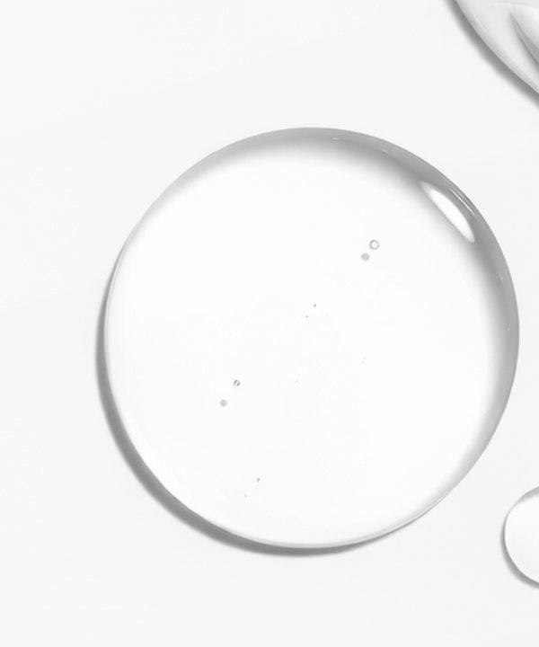

← 返回产品系列
焕能修护系列 · 修护水
焕能悦活修护水
REVITALIZING REPAIR TONER
洁面后的第一步，决定后续护肤的吸收效率。以 MCRF 丝素蛋白协同海藻糖、库拉索芦荟与马齿苋，调节水油、褪红焕亮，为屏障筑起第一道「防护水盾」。
规格150ml / 瓶
质地精华水质地 · 适合湿敷
日销价¥159 / 瓶 · 水乳套装 ¥368

0 酒精 · 0 防腐剂 · 0 香精 · 0 色素·核心成分 MCRF 为医用转民用，医美光电项目可用
Description
产品描述
焕能悦活修护水不止是一瓶「水」。它以自研 MCRF 丝素蛋白为骨架，复配四重植萃力量，在补水的同时参与屏障功能的调节——水油同调、褪红焕亮，让后续每一步护肤都落在更稳的肌底上。

产品质地
精华水质地，清爽渗透快，湿敷亦佳。
- 水感清爽，不闷不黏
- 渗透迅速，即刻补水
- 可日常轻拍，亦可湿敷
1
精华水质地，湿敷亦佳
水感清爽、渗透迅速，油皮不闷痘、干皮够润；亦可倒于化妆棉湿敷，作密集型舒缓护理。
2
28 天重塑屏障功能
经国家认证的人体功效评测试验：使用 28 天，经皮水分流失（TEWL）降低 39.04%。
3
水油同调，焕亮不暗沉
光泽度改善 47.57%，红色素降低 26.79%；角质层水分 +13.60%，脸部油脂改善 13.40%。
Efficacy
功效实证
39.04%
经皮水分流失降低率
28 天人体功效评测
47.57%
皮肤光泽度改善率
28 天人体功效评测
26.79%
红色素指标降低率
28 天人体功效评测
13.60%
角质层水分含量改善
28 天人体功效评测
数据源自国家认证机构人体功效评测试验，检测方法依据《化妆品功效宣称评价规范》以 TEWL 值评价皮肤屏障功能。
Formula
配方
核心成分
MCRF 丝素蛋白（蚕丝提取物）
核心成分 MCRF 丝素蛋白由品牌自研自产，以再生医学材料标准转化应用于护肤；与四重植萃协同，补水、抗氧化、舒缓炎症三线并进。
自研自产可完全降解代谢无免疫原性医用转民用
主要成分
- 海藻糖保护表层细胞、提高皮肤健康度，清除自由基，补水保湿抗氧化
- 库拉索芦荟提取物保持皮肤湿润娇嫩，舒缓皮肤炎症
- 透明质酸钠刺激胶原新生，令皮肤光泽饱满水嫩
- 马齿苋提取物消炎舒缓，深层补水，防止干燥
复配成分
MCRF 丝素蛋白（蚕丝提取物）甘草酸二钾
How to use
使用方法
-
1
调理
洁面后，倒适量修护水于掌心或化妆棉。
-
2
渗透
轻拍面部至完全吸收；亦可湿敷 3–5 分钟，作密集型舒缓护理。
-
3
承接
后续搭配焕能悦颜修护乳，锁住水分不流失。
适用人群
- 皮肤偏油容易闷痘，需要肤感清爽、保湿在线的水乳
- 干性肌肤、地处湿热地区的人群
- 皮肤屏障被医美 / 刷酸反复折腾，形成周期性敏皮
- 中性皮肤需要日常保湿维稳
Film
产品影片
Les Essentiels
推荐搭配


Service
专属服务
正品保障
官方渠道购买，全系列支持防伪查验
顺丰包邮
官方旗舰店下单，全国顺丰速运
无忧售后
7 天无理由退换，售后全程跟进
护肤顾问
1 对 1 肌肤咨询，定制修护方案